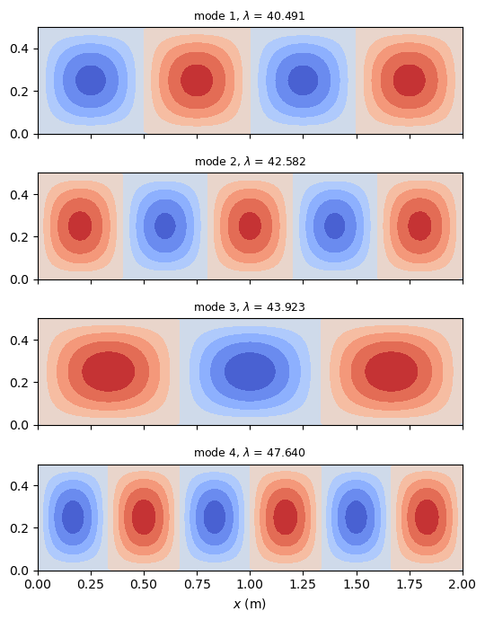

Linear buckling analysis of a plate#
A simply supported plate under uniaxial compression, in two variants:
with
Quad4Relements, the prestress coming from the linear static solution of the applied edge loads, throughupdate_probe_ueandupdate_KG;with
Quad4elements and a constant membrane stress state given directly to each element withupdate_KG_given_stress.
The eigenvalue problem is solved with pyfe3d.solver.linear_buckling, see Linear buckling and natural frequencies and Eigenvalue solvers and their verification. The critical loads are compared with the exact buckling load of Leissa (1969). The elements are described in Quad4R: one-point integration and hourglass control and Quad4: assumed transverse shear strains (MITC4); the
full references are at the end of the notebook.
[1]:
%matplotlib inline
import numpy as np
import matplotlib.pyplot as plt
from numpy import isclose
from scipy.sparse import coo_matrix
from pyfe3d import (DOF, DOUBLE, INT, Quad4R, Quad4RData, Quad4RProbe, Quad4,
Quad4Data, Quad4Probe)
from pyfe3d.shellprop_utils import isotropic_plate
from pyfe3d.solver import linear_buckling, solve
The reference value#
Leissa (1969, Sec. 10.2.1, p. 277) gives the buckling load of the plate with all edges simply supported under a uniform \(N_{xx}\), Eq. (10.46), as the load at which the frequency of his Eq. (10.44) vanishes. Minimised over the number \(m\) of half-waves along \(x\), it reads
The resultant on the loaded edge of width \(b\) is \(P_{cr} = N_{xx,cr} b\):
[2]:
def leissa(a, b, h, E, nu):
ms = np.arange(1, 21)
kcs = (ms*b/a + a/(ms*b))**2
kc = kcs.min()
D = E*h**3/(12*(1 - nu**2))
return kc, ms[np.argmin(kcs)], -kc*np.pi**2*D/b**2*b
1. Quad4R, prestress from a linear static solution#
The plate has \(a = 2\) m along \(x\), \(b = 0.5\) m, \(h = 0.003\) m, \(E = 203\) GPa and \(\nu = 0.33\). For \(a/b = 4\) the minimum is \(k_c = 4\) at \(m = 4\):
[3]:
a, b, h = 2.0, 0.5, 0.003
E, nu = 203.e9, 0.33
kc, m_cr, P_ref = leissa(a, b, h, E, nu)
print('k_c = %.4f, m = %d, P_cr = %.2f N' % (kc, m_cr, P_ref))
k_c = 4.0000, m = 4, P_cr = -40470.81 N
The function below builds the mesh with refinement*31 by refinement*15 nodes (rounded up to odd numbers, so that a node sits at the middle of each edge), with \(w = 0\) on the four edges; the in-plane rigid-body modes are removed by holding \(u\) at the middle of the edges \(y = 0, b\) and \(v\) at the middle of the edges \(x = 0, a\). Uniform compressive forces of 1000 N in total act on the edges \(x = 0\) and \(x = a\), lumped to the edge nodes (half the
nodal force at the corners), and balance each other.
The steps of the buckling analysis are:
assemble \(\boldsymbol{K}_{C0}\) and solve the linear static problem of the reference load, \(\boldsymbol{u}_0\);
give \(\boldsymbol{u}_0\) to each element with
update_probe_ue:update_KGthen computes the membrane stress resultants of the element and its geometric stiffness matrix \(\boldsymbol{K}_G\);solve \((\boldsymbol{K}_{C0} + \lambda \boldsymbol{K}_G) \boldsymbol{u} = \boldsymbol{0}\) for the lowest load multipliers \(\lambda\) with
linear_buckling, which equilibrates the diagonal, estimates the shift of the Cayley transformation and verifies that no lower multiplier was missed.
The critical load is \(\lambda_1\) times the reference load:
[4]:
def quad4r_plate(refinement, num_eigvalues=4):
data = Quad4RData()
probe = Quad4RProbe()
nx = refinement*31
ny = refinement*15
nx += 1 - nx % 2
ny += 1 - ny % 2
xtmp = np.linspace(0, a, nx)
ytmp = np.linspace(0, b, ny)
xmesh, ymesh = np.meshgrid(xtmp, ytmp)
ncoords = np.vstack((xmesh.T.flatten(), ymesh.T.flatten(),
np.zeros(nx*ny))).T
x = ncoords[:, 0]
y = ncoords[:, 1]
ncoords_flatten = ncoords.flatten()
nids = 1 + np.arange(ncoords.shape[0])
nid_pos = dict(zip(nids, np.arange(len(nids))))
nids_mesh = nids.reshape(nx, ny)
n1s = nids_mesh[:-1, :-1].flatten()
n2s = nids_mesh[1:, :-1].flatten()
n3s = nids_mesh[1:, 1:].flatten()
n4s = nids_mesh[:-1, 1:].flatten()
num_elements = len(n1s)
N = DOF*nx*ny
KC0r = np.zeros(data.KC0_SPARSE_SIZE*num_elements, dtype=INT)
KC0c = np.zeros(data.KC0_SPARSE_SIZE*num_elements, dtype=INT)
KC0v = np.zeros(data.KC0_SPARSE_SIZE*num_elements, dtype=DOUBLE)
KGr = np.zeros(data.KG_SPARSE_SIZE*num_elements, dtype=INT)
KGc = np.zeros(data.KG_SPARSE_SIZE*num_elements, dtype=INT)
KGv = np.zeros(data.KG_SPARSE_SIZE*num_elements, dtype=DOUBLE)
prop = isotropic_plate(thickness=h, E=E, nu=nu)
quads = []
for k, (n1, n2, n3, n4) in enumerate(zip(n1s, n2s, n3s, n4s)):
quad = Quad4R(probe)
quad.n1, quad.n2, quad.n3, quad.n4 = n1, n2, n3, n4
quad.c1 = DOF*nid_pos[n1]
quad.c2 = DOF*nid_pos[n2]
quad.c3 = DOF*nid_pos[n3]
quad.c4 = DOF*nid_pos[n4]
quad.init_k_KC0 = k*data.KC0_SPARSE_SIZE
quad.init_k_KG = k*data.KG_SPARSE_SIZE
quad.K6ROT = 100.
quad.update_rotation_matrix(ncoords_flatten)
quad.update_probe_xe(ncoords_flatten)
quad.update_KC0(KC0r, KC0c, KC0v, prop)
quads.append(quad)
KC0 = coo_matrix((KC0v, (KC0r, KC0c)), shape=(N, N)).tocsc()
bk = np.zeros(N, dtype=bool)
bk[2::DOF] = isclose(x, 0.) | isclose(x, a) | isclose(y, 0) | isclose(y, b)
bk[0::DOF] = isclose(x, a/2.) & (isclose(y, 0.) | isclose(y, b))
bk[1::DOF] = isclose(y, b/2.) & (isclose(x, 0.) | isclose(x, a))
bu = ~bk
# compressive edge loads, 1000 N in total on each loaded edge
ftotal = -1000.
fext = np.zeros(N)
corner = isclose(y, 0) | isclose(y, b)
for xedge, sign in [(0., -1.), (a, 1.)]:
edge = isclose(x, xedge)
fext[0::DOF][edge & ~corner] = sign*ftotal/(ny - 1)
fext[0::DOF][edge & corner] = sign*ftotal/(ny - 1)/2
u0 = np.zeros(N)
u0[bu] = solve(KC0[bu, :][:, bu], fext[bu])
for quad in quads:
quad.update_probe_ue(u0)
quad.update_probe_xe(ncoords_flatten)
quad.update_KG(KGr, KGc, KGv, prop)
KG = coo_matrix((KGv, (KGr, KGc)), shape=(N, N)).tocsc()
eigvals, eigvecsu = linear_buckling(KC0[bu, :][:, bu], KG[bu, :][:, bu],
num_eigvalues=num_eigvalues, tol=1e-9)
eigvecs = np.zeros((N, num_eigvalues))
eigvecs[bu] = eigvecsu
return dict(num_elements=(nx - 1, ny - 1), P_cr=eigvals[0]*ftotal,
eigvals=eigvals, eigvecs=eigvecs, xmesh=xmesh, ymesh=ymesh,
nx=nx, ny=ny)
Three meshes, with the physical stabilisation of the bending and of the transverse shear of Belytschko and Leviathan (1994) that Quad4R uses:
[5]:
print('%-9s %14s %14s %11s' % ('elements', 'P_cr (N)', 'Leissa (N)',
'rel. diff.'))
for refinement in [1, 2, 3]:
res = quad4r_plate(refinement)
print('%-9s %14.2f %14.2f %11.2e' % ('%dx%d' % res['num_elements'],
res['P_cr'], P_ref, res['P_cr']/P_ref - 1))
print('load multipliers of the finest mesh:', res['eigvals'])
elements P_cr (N) Leissa (N) rel. diff.
30x14 -41058.16 -40470.81 1.45e-02
62x30 -40572.79 -40470.81 2.52e-03
92x44 -40490.97 -40470.81 4.98e-04
load multipliers of the finest mesh: [40.49097422 42.5815938 43.92275118 47.64043236]
The four lowest buckling modes of the finest mesh, contours of \(w\): the first one has the \(m = 4\) half-waves of the reference. The next multipliers are close to the first one, since \(k_c\) changes little with \(m\) for a long plate:
[6]:
fig, axs = plt.subplots(4, 1, sharex=True, figsize=(8, 7))
for i, ax in enumerate(axs):
ax.set_aspect('equal')
wmode = res['eigvecs'][2::DOF, i].reshape(res['nx'], res['ny']).T
ax.contourf(res['xmesh'], res['ymesh'], wmode, levels=10, cmap='coolwarm')
ax.set_title(r'mode %d, $\lambda$ = %.3f' % (i + 1, res['eigvals'][i]),
fontsize=9)
axs[-1].set_xlabel('$x$ (m)')
plt.tight_layout()
plt.show()

2. Quad4, given membrane stress#
When the prestress is known, as here the uniform \(N_{xx}\), no static solution is needed: update_KG_given_stress(Nxx, Nyy, Nxy, ...) builds \(\boldsymbol{K}_G\) of each element directly from the given stress resultants. The plate has \(a = 2\) m, \(b = 0.5\) m, \(h = 0.002\) m, \(E = 203\) GPa and \(\nu =
0.33\), all the translations of the edge nodes are held, and \(N_{xx} = -1\) N/m, so that the load multiplier is the critical \(N_{xx}\) in N/m. With \(b/h =
250\) the Mindlin plate buckles 0.01 % below the Kirchhoff reference, so the reference also applies to the element:
[7]:
def quad4_plate_given_stress(nx, ny, a=2.0, b=0.5, h=0.002, E=203.e9,
nu=0.33, Nxx=-1.):
prop = isotropic_plate(E=E, nu=nu, thickness=h)
data = Quad4Data()
probe = Quad4Probe()
xtmp = np.linspace(0, a, nx)
ytmp = np.linspace(0, b, ny)
xmesh, ymesh = np.meshgrid(xtmp, ytmp)
ncoords = np.vstack((xmesh.T.flatten(), ymesh.T.flatten(),
np.zeros(nx*ny))).T
x = ncoords[:, 0]
y = ncoords[:, 1]
ncoords_flatten = ncoords.flatten()
nids = 1 + np.arange(ncoords.shape[0])
nid_pos = dict(zip(nids, np.arange(len(nids))))
nids_mesh = nids.reshape(nx, ny)
n1s = nids_mesh[:-1, :-1].flatten()
n2s = nids_mesh[1:, :-1].flatten()
n3s = nids_mesh[1:, 1:].flatten()
n4s = nids_mesh[:-1, 1:].flatten()
num_elements = len(n1s)
N = DOF*ncoords.shape[0]
KC0r = np.zeros(data.KC0_SPARSE_SIZE*num_elements, dtype=INT)
KC0c = np.zeros(data.KC0_SPARSE_SIZE*num_elements, dtype=INT)
KC0v = np.zeros(data.KC0_SPARSE_SIZE*num_elements, dtype=DOUBLE)
KGr = np.zeros(data.KG_SPARSE_SIZE*num_elements, dtype=INT)
KGc = np.zeros(data.KG_SPARSE_SIZE*num_elements, dtype=INT)
KGv = np.zeros(data.KG_SPARSE_SIZE*num_elements, dtype=DOUBLE)
for k, (n1, n2, n3, n4) in enumerate(zip(n1s, n2s, n3s, n4s)):
quad = Quad4(probe)
quad.n1, quad.n2, quad.n3, quad.n4 = n1, n2, n3, n4
quad.c1 = DOF*nid_pos[n1]
quad.c2 = DOF*nid_pos[n2]
quad.c3 = DOF*nid_pos[n3]
quad.c4 = DOF*nid_pos[n4]
quad.init_k_KC0 = k*data.KC0_SPARSE_SIZE
quad.init_k_KG = k*data.KG_SPARSE_SIZE
quad.update_rotation_matrix(ncoords_flatten)
quad.update_probe_xe(ncoords_flatten)
quad.update_KC0(KC0r, KC0c, KC0v, prop)
quad.update_KG_given_stress(Nxx, 0, 0, KGr, KGc, KGv)
KC0 = coo_matrix((KC0v, (KC0r, KC0c)), shape=(N, N)).tocsc()
KG = coo_matrix((KGv, (KGr, KGc)), shape=(N, N)).tocsc()
bk = np.zeros(N, dtype=bool)
edge = isclose(x, 0.) | isclose(x, a) | isclose(y, 0.) | isclose(y, b)
bk[0::DOF] = edge
bk[1::DOF] = edge
bk[2::DOF] = edge
bu = ~bk
return KC0[bu, :][:, bu], KG[bu, :][:, bu]
[8]:
Nxx = -1.
kc2, m2, P_ref2 = leissa(2.0, 0.5, 0.002, 203.e9, 0.33)
print('Leissa: k_c = %.4f, m = %d, N_xx,cr = %.3f N/m'
% (kc2, m2, P_ref2/0.5))
print('%-9s %16s %16s %11s %18s' % ('elements', 'N_xx,cr (N/m)', 'Leissa (N/m)',
'rel. diff.', 'eigvec. residual'))
for nx, ny in [(21, 7), (41, 13), (61, 19), (81, 25)]:
KC0uu, KGuu = quad4_plate_given_stress(nx, ny, Nxx=Nxx)
eigvals, eigvecs = linear_buckling(KC0uu, KGuu, num_eigvalues=4)
Ncr = eigvals[0]*Nxx
# relative residual of the first eigenpair, (KC0 + lambda*KG) u = 0
r = KC0uu @ eigvecs[:, 0] + eigvals[0]*(KGuu @ eigvecs[:, 0])
residual = np.linalg.norm(r)/np.linalg.norm(KC0uu @ eigvecs[:, 0])
print('%-9s %16.3f %16.3f %11.2e %18.2e' % ('%dx%d' % (nx - 1, ny - 1),
Ncr, P_ref2/0.5, Ncr/(P_ref2/0.5) - 1, residual))
Leissa: k_c = 4.0000, m = 4, N_xx,cr = -23982.699 N/m
elements N_xx,cr (N/m) Leissa (N/m) rel. diff. eigvec. residual
20x6 -25017.102 -23982.699 4.31e-02 5.30e-11
40x12 -24228.964 -23982.699 1.03e-02 2.98e-10
60x18 -24087.510 -23982.699 4.37e-03 4.21e-10
80x24 -24037.568 -23982.699 2.29e-03 1.68e-09
Both elements converge from above to the reference. The last column shows that the eigenvectors returned by linear_buckling satisfy the original, unscaled eigenvalue problem.
References#
Belytschko, T. and Leviathan, I., Physical stabilization of the 4-node shell element with one point quadrature, Computer Methods in Applied Mechanics and Engineering, 113(3-4), 321-350, 1994. https://doi.org/10.1016/0045-7825(94)90052-3
Leissa, A. W., Vibration of Plates, NASA SP-160, 1969.